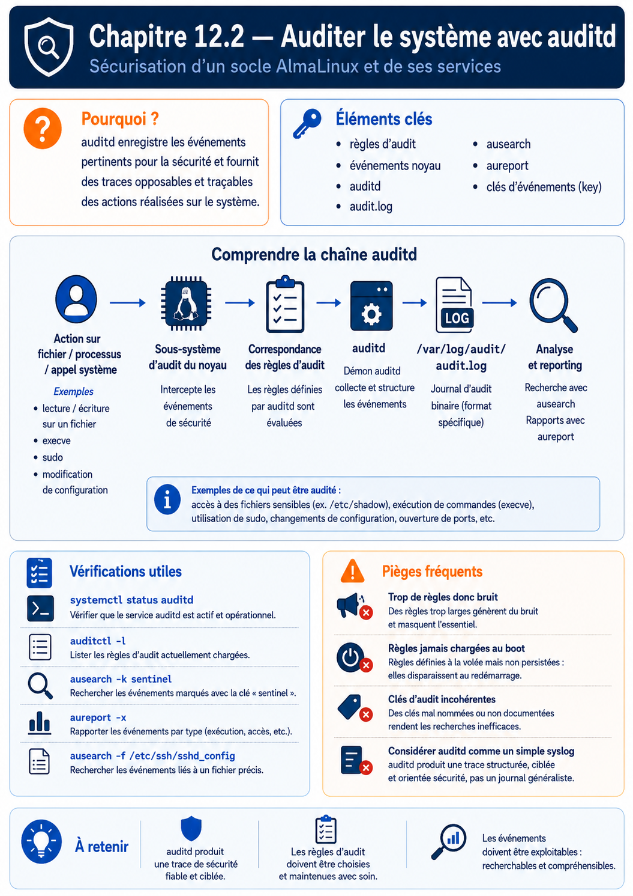

Chapitre 12.2 — Auditer le système avec auditd
Campagne 12 — Supervision et audit
« Un bon audit ne cherche pas à tout enregistrer ; il conserve les actions dont l'absence empêcherait de comprendre l'incident. »
Vous êtes ici
PARTIE II — Industrialiser la sécurité
Campagne 12
12.1 Centraliser les journaux avec Rsyslog ✔
► 12.2 Auditer le système avec auditd
12.3 Contrôler l'intégrité des fichiers avec AIDE
12.4 Superviser Sentinel avec Prometheus
12.5 Concevoir des alertes avec Alertmanager
12.6 Construire le tableau de bord Sentinel
Objectifs pédagogiques
À l'issue de ce chapitre, vous serez capable de :
- expliquer le trajet d'un événement entre le noyau,
auditdet les outils d'analyse ; - distinguer
auid, UID réel, UID effectif et contexte SELinux ; - écrire des règles de surveillance de fichiers et d'appels système ;
- rendre une politique persistante avec
augenrules; - rechercher et interpréter un événement composé de plusieurs enregistrements ;
- régler la capacité et le comportement de
auditden cas de pression disque ; - mesurer les limites et le coût d'une politique d'audit.
Pourquoi ce chapitre existe
Un journal applicatif peut annoncer « configuration rechargée » sans préciser quel compte a remplacé le fichier. Le journal de sudo peut montrer une élévation sans détailler tous les objets touchés. Linux Audit complète ces sources en observant des opérations au niveau du noyau et en conservant l'identité de connexion qui les a provoquées.
Cette puissance impose de la retenue. Une règle trop large produit un volume difficile à exploiter et peut augmenter la charge du système. Une règle trop étroite laisse un angle mort. Le travail consiste à traduire les scénarios de risque de Sentinel en événements ciblés et vérifiables.
Architecture de Linux Audit
Linux Audit comporte une partie noyau et des outils en espace utilisateur. Le noyau confronte les événements aux règles actives, les place dans une file, puis auditd les écrit. auditctl administre les règles actives ; ausearch et aureport lisent les journaux.
Sur les systèmes Enterprise Linux 9, la fonction historique d'audisp est intégrée à auditd ; les plugins restent configurés dans /etc/audit/plugins.d/. La journalisation Rsyslog du chapitre précédent ne signifie donc pas que le fichier brut audit.log est automatiquement expédié.
Un événement, plusieurs enregistrements
Une seule opération peut générer plusieurs lignes portant le même horodatage et le même identifiant d'événement :
| Type | Information typique |
|---|---|
SYSCALL |
appel, réussite, PID, identités et exécutable |
PATH |
chemin, inode, propriétaire et contexte SELinux |
CWD |
répertoire courant du processus |
PROCTITLE |
ligne de commande encodée |
EXECVE |
arguments d'une exécution |
USER_AUTH |
résultat d'une authentification utilisateur |
Ne lisez pas une ligne isolée comme un événement complet. ausearch rassemble les enregistrements partageant le même identifiant et peut interpréter les valeurs numériques avec -i.
Comprendre les identités
L'UID effectif répond à la question « avec quels privilèges le processus agit-il maintenant ? ». L'Audit user ID, ou auid, répond plutôt à « quelle identité a ouvert la session à l'origine ? ». Il est attribué à la connexion et hérité par les processus, même après sudo ou su.
| Champ | Sens simplifié |
|---|---|
auid |
UID de connexion, conservé pendant la session |
uid |
UID réel du processus |
euid |
UID utilisé pour de nombreux contrôles de permission |
exe |
exécutable associé à l'événement |
comm |
nom court de la commande |
subj |
contexte SELinux du processus |
obj |
contexte SELinux de l'objet |
La valeur 4294967295 représente couramment une identité de connexion non définie. Les règles ciblant des utilisateurs connectés l'excluent souvent explicitement.
💎 Le point d'expertise — Attribution n'est pas non-répudiation
auidrenforce l'attribution technique, mais un compte partagé, une clé SSH copiée ou une machine d'administration compromise affaiblit la conclusion. L'audit doit être corrélé avec l'authentification, la gestion des identités, l'heure, la provenance réseau et la protection des journaux.
Prendre l'état initial
Installez les outils et vérifiez le service :
sudo dnf install -y audit
sudo systemctl enable auditd
sudo systemctl status auditd --no-pager
sudo auditctl -s
sudo auditctl -l
auditctl -s affiche notamment l'état, le PID, le taux limite, le backlog et les pertes. Toute valeur lost non nulle mérite une analyse : elle signale que des événements n'ont pas pu être conservés par la chaîne d'audit.
Sur Enterprise Linux, utilisez service auditd <action> pour les actions comme restart, reload ou rotate. La documentation réserve systemctl à enable et status afin que les opérations sur le démon soient elles-mêmes correctement attribuées.
Écrire des règles ciblées
Les règles se répartissent en trois familles utiles au laboratoire.
Surveiller un objet
sudo auditctl -w /etc/sentinel/sentinel.conf -p wa -k sentinel_config
-p wa demande les écritures et changements d'attributs. Ajouter r sur un fichier lu très fréquemment peut générer beaucoup de bruit. Ajouter x n'a de sens que pour un objet exécutable.
Surveiller une arborescence de configuration
sudo auditctl -w /etc/systemd/system/sentinel.service.d/ \
-p wa -k sentinel_systemd
Une surveillance de répertoire doit être testée avec les opérations réelles : création, remplacement atomique, renommage et changement d'attributs. Les montages imbriqués et chemins éphémères exigent une attention particulière.
Surveiller des appels système
sudo auditctl -a always,exit -F arch=b64 \
-S unlink -S unlinkat -S rename -S renameat \
-F auid>=1000 -F auid!=4294967295 \
-k user_file_delete
Les filtres réduisent le coût. Spécifier arch=b64 évite l'ambiguïté d'architecture ; sur un système prenant en charge des exécutables 32 bits, une règle b32 distincte peut être nécessaire. Regrouper plusieurs appels système dans une règle est généralement plus efficace que multiplier les règles identiques.
Piège classique — copier une politique de conformité entière
Les exemples de
/usr/share/audit/sample-rules/sont des composants, pas une sélection à charger aveuglément. Une politique STIG ou PCI répond à un objectif précis et peut modifier le volume, le comportement en cas de panne et la disponibilité. Lisez, adaptez et testez.
Rendre les règles persistantes
Les règles passées avec auditctl disparaissent au redémarrage. Créez /etc/audit/rules.d/40-sentinel.rules :
-w /etc/sentinel/sentinel.conf -p wa -k sentinel_config
-w /etc/systemd/system/sentinel.service.d/ -p wa -k sentinel_systemd
-w /etc/containers/systemd/ -p wa -k sentinel_quadlet
Adaptez le chemin Quadlet au mode réellement utilisé : système ou utilisateur. Ne conservez pas une surveillance sur un répertoire absent sans expliquer le choix.
Compilez et chargez :
sudo augenrules --check
sudo augenrules --load
sudo auditctl -l
augenrules assemble les fichiers .rules par ordre naturel. Une convention fréquente place la base au début, les règles locales vers 70 et la finalisation immuable vers 90 ou 99.
Le mode immuable
La directive -e 2, placée en fin de politique, verrouille les règles jusqu'au redémarrage. Elle protège contre une modification à chaud, mais transforme aussi une erreur de règle en redémarrage de maintenance. Validez toute la politique et son coût avant de l'activer.
Régler la conservation et la panne
/etc/audit/auditd.conf détermine la taille, la rotation, la synchronisation et les réactions au manque d'espace. Il n'existe pas une valeur universelle ; le débit et l'exigence métier décident.
| Paramètre | Question à trancher |
|---|---|
max_log_file |
quelle taille pour un fichier ? |
max_log_file_action |
tourner, conserver ou suspendre ? |
space_left |
quand prévenir avant la saturation ? |
space_left_action |
comment avertir l'exploitation ? |
admin_space_left |
quelle réserve laisser à l'administrateur ? |
admin_space_left_action |
faut-il passer en mode restreint ? |
disk_full_action |
arrêter, suspendre ou continuer sans preuve ? |
flush et freq |
quel compromis entre durabilité et performance ? |
Une politique stricte peut choisir keep_logs, puis single ou halt lorsque l'audit ne peut plus écrire. Ce choix améliore la conservation des preuves mais réduit la disponibilité. Il doit être validé par le propriétaire métier, pas ajouté furtivement pendant un TP.
Surveillez la partition séparément :
df -h /var/log/audit
sudo du -sh /var/log/audit
sudo auditctl -s
Rechercher et interpréter
Recherche par clé :
sudo ausearch -k sentinel_config -ts recent -i
Recherche par identifiant d'événement :
sudo ausearch -a NUMERO_EVENEMENT -i
Échecs d'authentification récents :
sudo ausearch -m USER_AUTH,USER_LOGIN -sv no -ts today -i
Rapports synthétiques :
sudo aureport --login -i
sudo aureport --auth -i
sudo aureport --failed -i
L'option -i facilite la lecture, mais conservez aussi l'événement brut lors d'une enquête. L'interprétation dépend des bases de noms et du système au moment de la lecture.
TP 1 — Attribuer une modification de configuration
- Vérifiez que la règle
sentinel_configest active. - Depuis une session nominative, modifiez une ligne non sensible avec
sudoedit. - Validez la configuration Sentinel.
- Restaurez la valeur initiale.
- Recherchez les deux opérations.
sudo auditctl -l | grep sentinel_config
sudoedit /etc/sentinel/sentinel.conf
sudo ausearch -k sentinel_config -ts recent -i
Dans le compte rendu, identifiez auid, euid, exe, name, success, subj et le numéro d'événement. Expliquez pourquoi euid=0 ne signifie pas nécessairement que la session a été ouverte directement par root.
TP 2 — Tester la persistance
Créez la règle dans /etc/audit/rules.d/40-sentinel.rules, puis :
sudo augenrules --check
sudo augenrules --load
sudo auditctl -l | grep -E 'sentinel_(config|systemd|quadlet)'
Redémarrez uniquement la VM de laboratoire, puis répétez la dernière commande. Provoquez une modification contrôlée d'un drop-in systemd et recherchez-la :
sudo touch /etc/systemd/system/sentinel.service.d/audit-lab.conf
sudo ausearch -k sentinel_systemd -ts recent -i
sudo rm /etc/systemd/system/sentinel.service.d/audit-lab.conf
Le fichier vide est un artefact de laboratoire ; retirez-le et vérifiez que sa suppression apparaît également.
TP 3 — Corréler Audit, sudo et journaux centraux
Choisissez une fenêtre de cinq minutes. Dans une session nominative :
- exécutez une commande autorisée avec
sudo; - modifiez puis restaurez
sentinel.conf; - rechargez Sentinel ;
- relevez l'heure exacte.
Recherchez ensuite :
sudo ausearch -k sentinel_config -ts recent -i
sudo journalctl _COMM=sudo --since '-5 min' -o short-iso
sudo journalctl -u sentinel --since '-5 min' -o short-iso
Sur le collecteur, retrouvez les messages Rsyslog de la même fenêtre. Construisez une chronologie distinguant : authentification, élévation, modification, rechargement et résultat applicatif.
Diagnostiquer le bruit et les pertes
Pendant un test représentatif :
sudo auditctl -s
sudo ausearch -ts recent | wc -l
sudo aureport --summary
Si le volume explose, ne commencez pas par augmenter indéfiniment les limites. Identifiez la clé, l'appel ou le chemin responsable, puis resserrez les filtres. Si lost augmente, vérifiez le backlog, la charge, le disque et la vitesse de consommation par auditd.
Mission d'ingénieur — Définir la politique Audit de Sentinel
À partir de cinq scénarios — modification de configuration, changement d'unité, changement de politique SELinux, installation logicielle et suppression de données — produisez :
- la question d'enquête associée à chaque scénario ;
- la règle minimale permettant d'y répondre ;
- une clé stable et documentée ;
- un test positif et un test négatif ;
- une mesure du volume généré ;
- la stratégie de stockage et de saturation ;
- la procédure de recherche avec
ausearch; - la décision argumentée d'activer ou non
-e 2.
La politique est acceptable si elle survit au redémarrage, attribue les opérations de test, ne surveille pas aveuglément tout le système et ne produit aucune perte pendant la charge de qualification.
Impact sur Sentinel
Les changements sensibles de Sentinel ne reposent plus uniquement sur les messages de l'application. Une enquête peut relier l'identité de connexion, l'identité effective, l'exécutable, l'objet et le contexte SELinux.
Linux Audit ne dit pas si le contenu final est légitime. Il prouve qu'une opération a eu lieu selon les règles présentes. Le chapitre suivant compare l'état des fichiers à une référence approuvée afin de détecter les dérives de contenu et de métadonnées.
Références techniques
- Red Hat — Auditing the system ;
- Linux Audit Documentation ;
- pages de manuel locales
auditd(8),auditctl(8),audit.rules(7),augenrules(8),ausearch(8)etaureport(8).
Synthèse
- le noyau filtre les événements,
auditdles conserve et les outilsausearch/aureportles exploitent ; - un événement peut regrouper plusieurs enregistrements portant le même numéro ;
auidconserve l'identité de connexion tandis queeuiddécrit le privilège effectif ;- les règles temporaires servent à qualifier ;
/etc/audit/rules.d/etaugenrulesassurent la persistance ; -e 2verrouille la politique jusqu'au redémarrage et ne doit être activé qu'après validation ;- le disque, le backlog, les pertes et le volume font partie du modèle de sécurité.
Pour aller plus loin
Le chapitre 12.3 crée une baseline AIDE et organise la décision entre modification attendue et dérive suspecte.
Schéma récapitulatif
